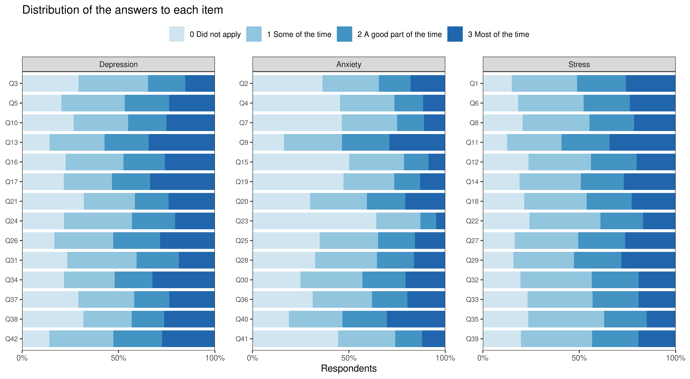
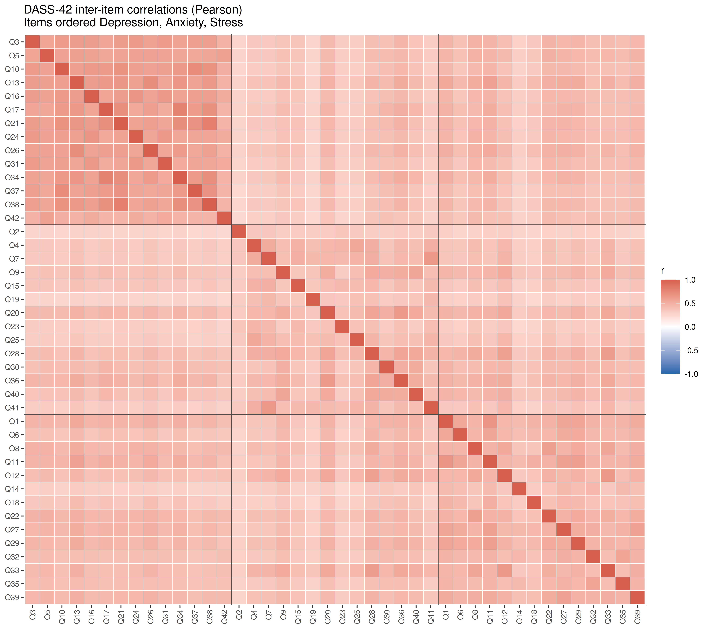
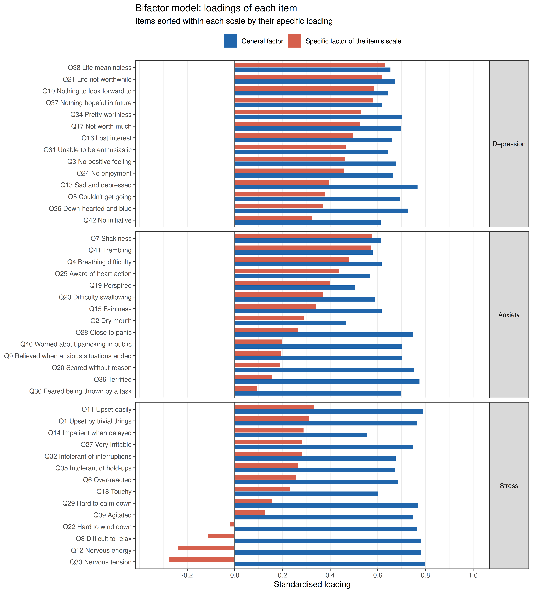
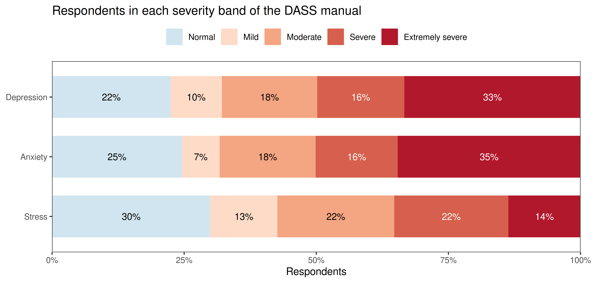
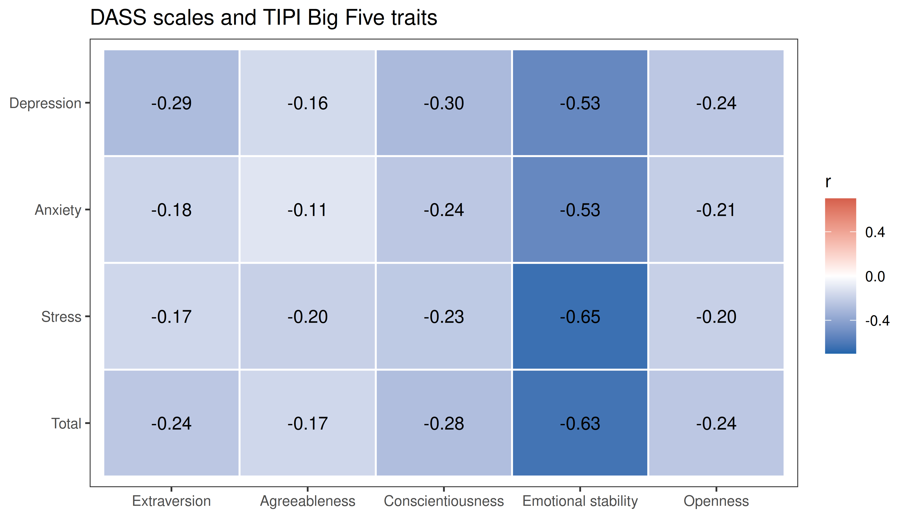
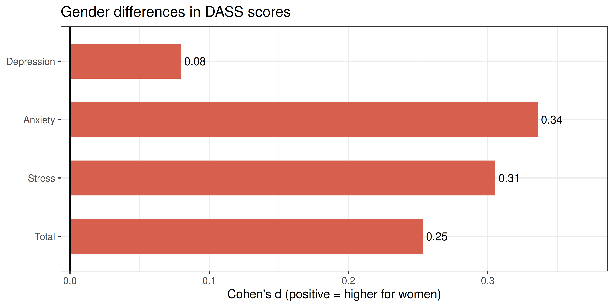

| Rule | Excluded | Remaining |
|---|---|---|
| All 42 items answered | 0 | 39,775 |
| No non-existent word ticked | 5,192 | 34,583 |
| Median time per item at least 1 second | 262 | 39,513 |
| Not the same non-zero answer to all 42 items | 139 | 39,636 |
| Age between 13 and 80 | 11 | 39,764 |
| Not an exact copy of an earlier record | 0 | 39,775 |
| All rules together | 5,438 | 34,337 |
DASS-42 Validation: Three Scales or One?
Description
The Depression Anxiety Stress Scales (DASS; Lovibond & Lovibond, 1995a) measure three negative emotional states with 42 short statements, 14 per scale. Respondents say how much each statement applied to them over the past week, from 0 (did not apply to me at all) to 3 (applied to me very much, or most of the time), and each scale score is the sum of its 14 items (0-42).
- Depression: dysphoria, hopelessness, devaluation of life, self-deprecation, lack of interest and involvement, anhedonia and inertia (I felt that life was meaningless, I couldn’t seem to experience any positive feeling at all).
- Anxiety: autonomic arousal, effects on the skeletal muscles, situational anxiety and the subjective experience of anxious affect (I experienced trembling, I felt I was close to panic).
- Stress: chronic non-specific arousal: difficulty relaxing, nervous arousal, being easily upset or agitated, irritable or over-reactive, and impatient (I found it hard to wind down, I found that I was very irritable).
The DASS was built to separate these three states as far as possible (Lovibond & Lovibond, 1995b), but they go together in most people: someone who reports many symptoms of one tends to report symptoms of the others. Clark and Watson’s (1991) tripartite model describes exactly this: a broad factor of general distress (negative affect) shared by anxiety and depression, plus something specific to each: low positive affect (anhedonia) for depression and physiological hyperarousal for anxiety. In a large non-clinical sample, Crawford and Henry (2003) found that the structure of the DASS-42 was described best by a model with such a general factor plus three specific factors.
This tutorial asks the practical question that follows: should the DASS be scored as three scales, or mainly as one total score of general distress? It fits the competing factor models to 34,337 online respondents and answers the question with the statistics developed for bifactor models: omega hierarchical, omega hierarchical subscale and the explained common variance (Reise, 2012; Rodriguez, Reise & Haviland, 2016).
The DASS describes the severity of symptoms; it does not diagnose anything, and nothing in this tutorial says anything about the mental health of an individual respondent. The questionnaire itself is in the public domain (DASS website).
Data and cleaning
The data come from the Open-Source Psychometrics Project (DASS_data_21.02.19.zip, 39,775 records collected online in 2017-2019). People took the test to get personalised feedback; the file contains only those who then agreed to a research survey and answered yes to “Have you given accurate answers and may they be used for research?”. The 42 items were shown one at a time in a different random order for each person, and the time taken to answer each item was recorded. The survey also contained the Ten Item Personality Inventory (TIPI; Gosling et al., 2003), a vocabulary checklist and demographic questions. data/prepare_dass.R applies the cleaning rules below.
- Non-existent words. Respondents ticked the words in a list whose meaning they were sure they knew; three of the sixteen words (cuivocal, florted, verdid) do not exist. Claiming to know one of them is a sign of careless or overclaiming answers.
- Too fast. Each person’s median time per item must be at least one second; a faster median means that most statements were answered more quickly than they can be read. The median, unlike the total test time, is not inflated by a single long pause.
- The same answer to all 42 items. The DASS has no reverse-keyed items, so a constant answer cannot be told apart from genuine answers by its content alone. Answering did not apply to me at all to every statement is a plausible report of no symptoms in the past week and is kept. Answering 1, 2 or 3 to every item is not: it means that every symptom, from trembling to difficulty in swallowing, applied to exactly the same degree.
- Plausible age (13-80; the oldest records include years of birth typed as ages) and no exact copy of an earlier record. The data also flag 7,956 records that came from a network that sent more than one survey. This is not used as a rule: the codebook warns that it does not imply a duplicate (students at one school, members of one household), and no two records are identical.
The remaining 34,337 respondents are young (median age 21, 18% under 18) and mostly women (77%). 57% connected from Malaysia and 18% from the United States, and 66% do not have English as their native language. They are also people who chose to take an online test of depression, anxiety and stress, so they are not a sample of any general population; this matters for the symptom levels below, much less for the structure of the items.
Item List
Show the 42 items with their scale
| Label | Scale | Item |
|---|---|---|
| Q3 | Depression | I couldn’t seem to experience any positive feeling at all. |
| Q5 | Depression | I just couldn’t seem to get going. |
| Q10 | Depression | I felt that I had nothing to look forward to. |
| Q13 | Depression | I felt sad and depressed. |
| Q16 | Depression | I felt that I had lost interest in just about everything. |
| Q17 | Depression | I felt I wasn’t worth much as a person. |
| Q21 | Depression | I felt that life wasn’t worthwhile. |
| Q24 | Depression | I couldn’t seem to get any enjoyment out of the things I did. |
| Q26 | Depression | I felt down-hearted and blue. |
| Q31 | Depression | I was unable to become enthusiastic about anything. |
| Q34 | Depression | I felt I was pretty worthless. |
| Q37 | Depression | I could see nothing in the future to be hopeful about. |
| Q38 | Depression | I felt that life was meaningless. |
| Q42 | Depression | I found it difficult to work up the initiative to do things. |
| Q2 | Anxiety | I was aware of dryness of my mouth. |
| Q4 | Anxiety | I experienced breathing difficulty (eg, excessively rapid breathing, breathlessness in the absence of physical exertion). |
| Q7 | Anxiety | I had a feeling of shakiness (eg, legs going to give way). |
| Q9 | Anxiety | I found myself in situations that made me so anxious I was most relieved when they ended. |
| Q15 | Anxiety | I had a feeling of faintness. |
| Q19 | Anxiety | I perspired noticeably (eg, hands sweaty) in the absence of high temperatures or physical exertion. |
| Q20 | Anxiety | I felt scared without any good reason. |
| Q23 | Anxiety | I had difficulty in swallowing. |
| Q25 | Anxiety | I was aware of the action of my heart in the absence of physical exertion (eg, sense of heart rate increase, heart missing a beat). |
| Q28 | Anxiety | I felt I was close to panic. |
| Q30 | Anxiety | I feared that I would be “thrown” by some trivial but unfamiliar task. |
| Q36 | Anxiety | I felt terrified. |
| Q40 | Anxiety | I was worried about situations in which I might panic and make a fool of myself. |
| Q41 | Anxiety | I experienced trembling (eg, in the hands). |
| Q1 | Stress | I found myself getting upset by quite trivial things. |
| Q6 | Stress | I tended to over-react to situations. |
| Q8 | Stress | I found it difficult to relax. |
| Q11 | Stress | I found myself getting upset rather easily. |
| Q12 | Stress | I felt that I was using a lot of nervous energy. |
| Q14 | Stress | I found myself getting impatient when I was delayed in any way (eg, elevators, traffic lights, being kept waiting). |
| Q18 | Stress | I felt that I was rather touchy. |
| Q22 | Stress | I found it hard to wind down. |
| Q27 | Stress | I found that I was very irritable. |
| Q29 | Stress | I found it hard to calm down after something upset me. |
| Q32 | Stress | I found it difficult to tolerate interruptions to what I was doing. |
| Q33 | Stress | I was in a state of nervous tension. |
| Q35 | Stress | I was intolerant of anything that kept me from getting on with what I was doing. |
| Q39 | Stress | I found myself getting agitated. |
Checking the Scoring Key
The key used here (key above) is the one in the DASS manual, and the wording of every item fits its scale: the 14 Depression items are about low mood, hopelessness, worthlessness, loss of interest and inertia; the 14 Anxiety items about bodily arousal (dry mouth, breathing, trembling, heart), panic and fear; the 14 Stress items about tension, irritability, impatience and difficulty relaxing. As an empirical check, each item is correlated with the rest of its own scale (the scale total without the item) and with the totals of the other two scales. An item that belongs to its scale should correlate most with it.
Code
rest_r <- t(sapply(item_cols, function(i) sapply(scales, function(s) {
total <- scores[[s]]
if (item_scale[i] == s) total <- total - df[[i]] # own scale: rest score
cor(df[[i]], total)
})))
highest <- scales[apply(rest_r, 1, which.max)]
key_tab <- as.data.frame.matrix(table(factor(item_scale, scales), factor(highest, scales)))
knitr::kable(cbind(Scale = scales, key_tab), row.names = FALSE,
caption = "Number of items by their scale (rows) and the scale they correlate with most (columns)")| Scale | Depression | Anxiety | Stress |
|---|---|---|---|
| Depression | 14 | 0 | 0 |
| Anxiety | 0 | 13 | 1 |
| Stress | 0 | 2 | 12 |
Code
off <- item_cols[highest != item_scale]
knitr::kable(data.frame(item = off, scale = item_scale[off], round(rest_r[off, , drop = FALSE], 2),
text = df_lookup[off, "text"]),
row.names = FALSE, col.names = c("Item", "Scale", scales, "Wording"),
caption = "Items that correlate at least as much with another scale")| Item | Scale | Depression | Anxiety | Stress | Wording |
|---|---|---|---|---|---|
| Q30 | Anxiety | 0.52 | 0.60 | 0.60 | I feared that I would be “thrown” by some trivial but unfamiliar task. |
| Q12 | Stress | 0.51 | 0.68 | 0.65 | I felt that I was using a lot of nervous energy. |
| Q33 | Stress | 0.53 | 0.68 | 0.66 | I was in a state of nervous tension. |
39 of 42 items correlate most with their own scale. The exceptions sit on the border between Stress and Anxiety: two Stress items about nervous energy and tension, which go a little more with the Anxiety items, and an Anxiety item about fearing to be thrown by a trivial task, which goes as much with Stress. None of them is miskeyed: they still correlate highly with their own scale (0.60-0.66). They are items whose specific loading in the bifactor model below is near zero or negative, so they measure general distress rather than their own scale.
Responses
Code
answer_labels <- c("0 Did not apply", "1 Some of the time", "2 A good part of the time", "3 Most of the time")
resp <- do.call(rbind, lapply(item_cols, function(i)
data.frame(item = i, scale = item_scale[[i]], answer = answer_labels,
p = as.vector(prop.table(table(factor(df[[i]], levels = 0:3)))))))
resp$item <- factor(resp$item, levels = rev(item_cols))
resp$scale <- factor(resp$scale, levels = scales)
resp$answer <- factor(resp$answer, levels = answer_labels)
ggplot(resp, aes(x = p, y = item, fill = answer)) +
geom_col(width = 0.85, position = position_stack(reverse = TRUE)) +
facet_wrap(~ scale, scales = "free_y") +
scale_fill_manual(values = c("#d1e5f0", "#92c5de", "#4393c3", "#2166ac"), name = NULL) +
scale_x_continuous(breaks = c(0, 0.5, 1), labels = c("0%", "50%", "100%"), expand = c(0, 0)) +
labs(x = "Respondents", y = NULL) +
theme_bw(base_size = 10) +
theme(legend.position = "top", axis.text.y = element_text(size = 7), panel.grid = element_blank(),
panel.spacing.x = unit(1.5, "lines"), plot.margin = margin(5.5, 15, 5.5, 5.5)) +
ggtitle("Distribution of the answers to each item")
Code
zero <- sapply(df, function(v) mean(v == 0))Overall, 27% of the answers are did not apply, but the items differ: the bodily symptoms of anxiety are the least common (Q23, difficulty swallowing, did not apply to 64%), while most Stress and Depression items are spread over all four answers. Items with four answer categories and skewed distributions like these are better treated as ordinal in a factor analysis (Rhemtulla, Brosseau-Liard & Savalei, 2012), which the models below do.
Reliability
Cronbach’s alpha and McDonald’s omega (total) for each scale and for the total score of all 42 items, with the range of corrected item-total correlations. Omega comes from a one-factor model of each scale: \(\omega = (\sum\lambda)^2 / [(\sum\lambda)^2 + \sum\psi]\). Means and standard deviations are of the sum scores (0-42 per scale, 0-126 in total).
Code
reliability <- do.call(rbind, lapply(c(factors, list(Total = item_cols)), function(f) {
x <- df[, f]
a <- psych::alpha(x, warnings = FALSE)
l <- as.vector(fa(x, nfactors = 1, fm = "ml")$loadings)
data.frame(mean = mean(rowSums(x)),
sd = sd(rowSums(x)),
alpha = a$total$raw_alpha,
omega = sum(l)^2 / (sum(l)^2 + sum(1 - l^2)),
r_drop = sprintf("%.2f-%.2f", min(a$item.stats$r.drop), max(a$item.stats$r.drop)))
}))
reliability <- cbind(scale = c(scales, "Total (42 items)"), reliability)
knitr::kable(reliability, digits = 2, row.names = FALSE,
col.names = c("Scale", "Mean", "SD", "Alpha", "Omega", "Item-total r"))| Scale | Mean | SD | Alpha | Omega | Item-total r |
|---|---|---|---|---|---|
| Depression | 20.86 | 12.20 | 0.95 | 0.95 | 0.62-0.81 |
| Anxiety | 15.80 | 10.00 | 0.91 | 0.91 | 0.48-0.71 |
| Stress | 20.97 | 10.38 | 0.93 | 0.93 | 0.55-0.73 |
| Total (42 items) | 57.63 | 29.54 | 0.97 | 0.97 | 0.44-0.75 |
All three scales are highly reliable (alpha 0.91-0.95), and so is the total score. High reliability does not show that a scale measures one thing, though: a scale can be reliable because its items share a broad factor with the other two scales. The next sections separate the two.
Inter-Item Correlation Matrix
Code
cor_mat <- cor(df)
cor_long <- melt(cor_mat)
cor_long$Var1 <- factor(cor_long$Var1, levels = item_cols)
cor_long$Var2 <- factor(cor_long$Var2, levels = rev(item_cols))
ggplot(cor_long, aes(x = Var1, y = Var2, fill = value)) +
geom_tile(color = "white", linewidth = 0.2) +
scale_fill_gradient2(low = "#2166ac", mid = "white", high = "#d6604d",
midpoint = 0, limits = c(-1, 1), name = "r") +
geom_hline(yintercept = c(14.5, 28.5), colour = "grey30", linewidth = 0.3) +
geom_vline(xintercept = c(14.5, 28.5), colour = "grey30", linewidth = 0.3) +
theme_bw(base_size = 9) +
theme(axis.text.x = element_text(angle = 90, hjust = 1, vjust = 0.5, size = 7),
axis.text.y = element_text(size = 7),
axis.title = element_blank(), panel.grid = element_blank()) +
ggtitle("DASS-42 inter-item correlations (Pearson)\nItems ordered Depression, Anxiety, Stress")
Code
off_diag <- cor_mat
diag(off_diag) <- NA
block_r <- sapply(scales, function(a) sapply(scales, function(b)
mean(off_diag[item_scale == a, item_scale == b], na.rm = TRUE)))
knitr::kable(round(block_r, 2), caption = "Mean correlation between items of the same scale (diagonal) and of two scales")| Depression | Anxiety | Stress | |
|---|---|---|---|
| Depression | 0.60 | 0.36 | 0.42 |
| Anxiety | 0.36 | 0.43 | 0.39 |
| Stress | 0.42 | 0.39 | 0.47 |
All correlations are positive (0.25 to 0.81): every symptom goes with every other. The Depression block stands out most clearly (mean r = 0.60 within the scale, 0.36 and 0.42 with the other two). The Stress block hardly does: its items correlate 0.47 with each other on average and almost as much with the Depression (0.42) and Anxiety items (0.39).
Competing Factor Models
Three models of the 42 items:
- One factor: a single dimension of general distress.
- Three correlated factors: Depression, Anxiety and Stress, the structure the scoring assumes. (A second-order model with one general factor above the three is not tested separately: with three first-order factors it is just-identified at the top and fits exactly like this model.)
- Bifactor: every item loads on a general factor and on the specific factor of its scale; all four factors are uncorrelated. The specific factors capture what the items of a scale share beyond general distress.
The items are treated as ordinal: the models are fitted to polychoric correlations with the WLSMV estimator (diagonally weighted least squares with robust standard errors and a mean- and variance-adjusted test). With 34,337 respondents this takes about 15 seconds per model.
Code
general <- paste0("General =~ ", paste(item_cols, collapse = " + "))
specifics <- paste(sapply(scales, function(s) paste0(s, " =~ ", paste(factors[[s]], collapse = " + "))),
collapse = "\n")
fit_one <- cfa(general, data = df, ordered = TRUE, estimator = "WLSMV", std.lv = TRUE)
fit_three <- cfa(specifics, data = df, ordered = TRUE, estimator = "WLSMV", std.lv = TRUE)
fit_bi <- cfa(paste(general, specifics, sep = "\n"), data = df, ordered = TRUE,
estimator = "WLSMV", std.lv = TRUE, orthogonal = TRUE)
fits <- list(`One factor` = fit_one, `Three correlated factors` = fit_three, Bifactor = fit_bi)
fm <- sapply(fits, fitMeasures, c("npar", "chisq.scaled", "df", "cfi.robust", "tli.robust",
"rmsea.robust", "rmsea.ci.lower.robust", "rmsea.ci.upper.robust",
"srmr", "cfi.scaled", "rmsea.scaled"))
fit_tab <- data.frame(
index = c("Free parameters", "Chi-square (scaled)", "df", "CFI (robust)", "TLI (robust)",
"RMSEA (robust) [90% CI]", "SRMR", "CFI (scaled)", "RMSEA (scaled)"),
sapply(colnames(fm), function(m) c(
sprintf("%d", fm["npar", m]), fmt(round(fm["chisq.scaled", m])), sprintf("%d", fm["df", m]),
sprintf("%.3f", fm["cfi.robust", m]), sprintf("%.3f", fm["tli.robust", m]),
sprintf("%.3f [%.3f, %.3f]", fm["rmsea.robust", m], fm["rmsea.ci.lower.robust", m], fm["rmsea.ci.upper.robust", m]),
sprintf("%.3f", fm["srmr", m]), sprintf("%.3f", fm["cfi.scaled", m]), sprintf("%.3f", fm["rmsea.scaled", m]))),
check.names = FALSE)
knitr::kable(fit_tab, col.names = c("Fit index", colnames(fm)), row.names = FALSE, align = "lrrr")| Fit index | One factor | Three correlated factors | Bifactor |
|---|---|---|---|
| Free parameters | 168 | 171 | 210 |
| Chi-square (scaled) | 285,473 | 121,904 | 81,939 |
| df | 819 | 816 | 777 |
| CFI (robust) | 0.748 | 0.880 | 0.918 |
| TLI (robust) | 0.735 | 0.873 | 0.909 |
| RMSEA (robust) [90% CI] | 0.103 [0.103, 0.104] | 0.072 [0.071, 0.072] | 0.061 [0.060, 0.061] |
| SRMR | 0.076 | 0.042 | 0.031 |
| CFI (scaled) | 0.867 | 0.943 | 0.962 |
| RMSEA (scaled) | 0.101 | 0.066 | 0.055 |
Code
phi <- lavInspect(fit_three, "cor.lv")
knitr::kable(round(phi[scales, scales], 2), caption = "Correlations between the three factors")| Depression | Anxiety | Stress | |
|---|---|---|---|
| Depression | 1.00 | 0.72 | 0.79 |
| Anxiety | 0.72 | 1.00 | 0.87 |
| Stress | 0.79 | 0.87 | 1.00 |
With tens of thousands of respondents every chi-square test rejects, so the approximate indices are the ones to read. The table gives two versions of CFI and RMSEA. The robust versions (Savalei, 2021) estimate how well the model would fit in the population. The older scaled versions, which most software prints for WLSMV, do not estimate those population values correctly with ordinal data; here, as is common, they are more favourable. They are shown only for comparison with published studies.
- The one-factor model fits poorly (robust CFI 0.75, RMSEA 0.103): one dimension is not enough.
- The three correlated factors fit much better (robust CFI 0.88, RMSEA 0.072, SRMR 0.042), but the factors are highly correlated: from 0.72 (Depression with Anxiety) to 0.87 (Anxiety with Stress).
- The bifactor model fits best (robust CFI 0.92, RMSEA 0.061, SRMR 0.031).
The fit of the bifactor model is acceptable rather than good. RMSEA and SRMR meet the usual benchmarks (below .08), but the robust CFI is below the stricter .95 benchmark (the scaled CFI, 0.96, would pass it). Its advantage also has to be read with care: with 39 more free parameters the bifactor model is more flexible than the three-factor model, and bifactor models are known to fit better partly because they also absorb noise and unusual response patterns (Bonifay, Lane & Reise, 2017). Fit alone does not decide between the models; the bifactor indices below say whether the specific factors carry enough to matter.
Where the models still misfit
The largest residual correlations of the bifactor model (observed minus model-implied polychoric correlation) show where the remaining misfit is.
Code
res <- resid(fit_bi, type = "cor")$cov
res[upper.tri(res, diag = TRUE)] <- NA
top <- order(-abs(res))[1:6]
pairs <- data.frame(item1 = rownames(res)[row(res)[top]], item2 = colnames(res)[col(res)[top]],
r = res[top])
pairs$text1 <- df_lookup[pairs$item1, "short"]
pairs$text2 <- df_lookup[pairs$item2, "short"]
knitr::kable(pairs[, c("item1", "text1", "item2", "text2", "r")], digits = 2, row.names = FALSE,
col.names = c("Item", "Content", "Item", "Content", "Residual r"))| Item | Content | Item | Content | Residual r |
|---|---|---|---|---|
| Q42 | No initiative | Q5 | Couldn’t get going | 0.13 |
| Q35 | Intolerant of hold-ups | Q32 | Intolerant of interruptions | 0.12 |
| Q40 | Worried about panicking in public | Q9 | Relieved when anxious situations ended | 0.11 |
| Q36 | Terrified | Q20 | Scared without reason | 0.11 |
| Q33 | Nervous tension | Q28 | Close to panic | 0.10 |
| Q40 | Worried about panicking in public | Q30 | Feared being thrown by a task | 0.09 |
Code
cat(sprintf("Residual correlations above |0.10|: %d of %d\n", sum(abs(res) > 0.10, na.rm = TRUE),
sum(!is.na(res))))Residual correlations above |0.10|: 5 of 861The misfit is local: a handful of item pairs that ask almost the same question in different words (couldn’t get going and no initiative; intolerant of interruptions and of hold-ups; scared without reason and terrified). Pairs like these correlate more than a factor model without correlated residuals can explain. They are left in the model as it is: freeing residual correlations after looking at the data would make the fit look better without testing anything.
The Bifactor Model
General and specific loadings
Code
std <- standardizedSolution(fit_bi)
lam <- std[std$op == "=~", ]
lambda_g <- setNames(lam$est.std[lam$lhs == "General"], lam$rhs[lam$lhs == "General"])[item_cols]
lambda_s <- setNames(lam$est.std[lam$lhs != "General"], lam$rhs[lam$lhs != "General"])[item_cols]
bl <- data.frame(item = item_cols, scale = factor(item_scale, levels = scales),
General = lambda_g, Specific = lambda_s)
bl$label <- factor(item_label[bl$item], levels = item_label[item_cols[order(item_scale, bl$Specific)]])
bl_long <- melt(bl[, c("label", "scale", "General", "Specific")], id.vars = c("label", "scale"),
variable.name = "factor", value.name = "loading")
ggplot(bl_long, aes(x = loading, y = label, fill = factor)) +
geom_col(position = position_dodge(width = 0.8), width = 0.75) +
geom_vline(xintercept = 0, colour = "grey40") +
facet_grid(scale ~ ., scales = "free_y", space = "free_y") +
scale_fill_manual(values = c(General = "#2166ac", Specific = "#d6604d"),
labels = c(General = "General factor", Specific = "Specific factor of the item's scale"),
name = NULL) +
scale_x_continuous(limits = c(-0.35, 1), breaks = seq(-0.2, 1, 0.2)) +
labs(x = "Standardised loading", y = NULL) +
theme_bw(base_size = 10) +
theme(legend.position = "top", strip.text.y = element_text(angle = 0),
panel.grid.major.y = element_blank()) +
ggtitle("Bifactor model: loadings of each item",
subtitle = "Items sorted within each scale by their specific loading")
Code
spec <- split(lambda_s, item_scale)[scales]
knitr::kable(data.frame(scale = scales,
general = sapply(scales, function(s) mean(lambda_g[item_scale == s])),
specific = sapply(spec, mean),
min = sapply(spec, min), max = sapply(spec, max),
below = sapply(spec, function(l) sum(l < 0.20))),
digits = 2, row.names = FALSE,
col.names = c("Scale", "Mean general loading", "Mean specific loading",
"Lowest specific", "Highest specific", "Specific loadings below .20"))| Scale | Mean general loading | Mean specific loading | Lowest specific | Highest specific | Specific loadings below .20 |
|---|---|---|---|---|---|
| Depression | 0.67 | 0.49 | 0.33 | 0.63 | 0 |
| Anxiety | 0.64 | 0.33 | 0.09 | 0.58 | 5 |
| Stress | 0.72 | 0.13 | -0.28 | 0.33 | 6 |
Code
top_s <- function(s, k = 4) names(sort(spec[[s]], decreasing = TRUE))[1:k]
low_s <- function(s, k = 5) names(sort(spec[[s]]))[1:k]Every item loads substantially on the general factor (0.47-0.80). The specific factors are much weaker, and they differ:
- The Depression factor is the clearest. Its strongest items, life meaningless (0.63), life not worthwhile (0.62), nothing to look forward to (0.58), nothing hopeful in future (0.58), are about hopelessness and the devaluation of life. The weakest, no initiative (0.33), down-hearted and blue (0.37), couldn’t get going (0.38), sad and depressed (0.39), are about low mood and inertia, which the items share with anxiety and stress. Hopelessness is what is most specific to depression.
- The Anxiety factor is carried by the bodily symptoms: shakiness (0.58), trembling (0.57), breathing difficulty (0.48), aware of heart action (0.44). The items about fear and anxious situations (feared being thrown by a task, terrified, scared without reason, relieved when anxious situations ended, worried about panicking in public) have specific loadings of 0.20 or less: they are general distress. What is specific to anxiety is the tripartite model’s physiological hyperarousal (Clark & Watson, 1991).
- The Stress factor almost disappears. 6 of its 14 items have specific loadings below .20, 4 of them negative (difficult to relax, nervous energy, hard to wind down, nervous tension); the highest is 0.33. Once general distress is taken out, the Stress items have little left in common: in this sample, stress is the core of general distress, not a third state beside it.
Bifactor indices
The indices are computed directly from the standardised loadings of the bifactor model, with \(\lambda_{Gi}\) the general and \(\lambda_{si}\) the specific loading of item \(i\), \(\theta_i = 1 - \lambda_{Gi}^2 - \lambda_{si}^2\) its unique variance, and sums over all 42 items or over the 14 items of scale \(s\) (Rodriguez et al., 2016):
\[\omega_T = \frac{(\sum \lambda_G)^2 + \sum_s (\sum_{i \in s} \lambda_{si})^2}{(\sum \lambda_G)^2 + \sum_s (\sum_{i \in s} \lambda_{si})^2 + \sum \theta} \qquad \omega_H = \frac{(\sum \lambda_G)^2}{(\sum \lambda_G)^2 + \sum_s (\sum_{i \in s} \lambda_{si})^2 + \sum \theta}\]
\[\omega_{S} = \frac{(\sum_{i \in s} \lambda_{Gi})^2 + (\sum_{i \in s} \lambda_{si})^2}{(\sum_{i \in s} \lambda_{Gi})^2 + (\sum_{i \in s} \lambda_{si})^2 + \sum_{i \in s} \theta_i} \qquad \omega_{HS} = \frac{(\sum_{i \in s} \lambda_{si})^2}{(\sum_{i \in s} \lambda_{Gi})^2 + (\sum_{i \in s} \lambda_{si})^2 + \sum_{i \in s} \theta_i}\]
\[\text{ECV} = \frac{\sum \lambda_G^2}{\sum \lambda_G^2 + \sum_s \sum_{i \in s} \lambda_{si}^2} \qquad H = \frac{1}{1 + 1 / \sum \frac{\lambda^2}{1 - \lambda^2}} \qquad \text{PUC} = 1 - \frac{\sum_s n_s(n_s - 1)/2}{n(n-1)/2}\]
- \(\omega_T\) and \(\omega_S\): reliability of the total score and of a subscale score (all common variance).
- \(\omega_H\) and \(\omega_{HS}\): the part of that variance due to the general factor alone (total score) or to the specific factor alone (subscale score, after the general factor is removed).
- ECV: the share of all common variance that belongs to the general factor; computed within one scale (ECV of the specific factor), the share of that scale’s common variance that belongs to its specific factor.
- H (Hancock & Mueller, 2001): how well a factor is defined by its items, that is, how well it would replicate across studies.
- PUC: the proportion of item correlations that only the general factor can explain (pairs of items from different scales).
- ARPB: the average relative difference between an item’s loading in the one-factor model and its general loading in the bifactor model, that is, how much forcing one factor distorts the loadings.
Polychoric loadings describe the continuous responses assumed to underlie the four answer categories, not the 0-3 scores that are added up in practice, so the same indices are also computed from the bifactor model refitted to the item scores as continuous variables (robust maximum likelihood, MLR).
Code
bifactor_indices <- function(fit, fit1) {
std <- standardizedSolution(fit)
lam <- std[std$op == "=~", ]
lg <- setNames(lam$est.std[lam$lhs == "General"], lam$rhs[lam$lhs == "General"])[item_cols]
ls <- setNames(lam$est.std[lam$lhs != "General"], lam$rhs[lam$lhs != "General"])[item_cols]
l1 <- standardizedSolution(fit1)
l1 <- setNames(l1$est.std[l1$op == "=~"], l1$rhs[l1$op == "=~"])[item_cols]
theta <- 1 - lg^2 - ls^2
H <- function(l) 1 / (1 + 1 / sum(l^2 / (1 - l^2)))
total_var <- sum(lg)^2 + sum(tapply(ls, item_scale, sum)^2) + sum(theta)
overall <- c(omega_t = (total_var - sum(theta)) / total_var,
omega_h = sum(lg)^2 / total_var,
ecv = sum(lg^2) / (sum(lg^2) + sum(ls^2)),
h = H(lg),
arpb = mean(abs(l1 - lg) / lg))
sub <- t(sapply(scales, function(s) {
i <- item_scale == s
v <- sum(lg[i])^2 + sum(ls[i])^2 + sum(theta[i])
c(omega_s = (sum(lg[i])^2 + sum(ls[i])^2) / v,
omega_hs = sum(ls[i])^2 / v,
ecv_s = sum(ls[i]^2) / (sum(ls[i]^2) + sum(lg[i]^2)),
h = H(ls[i]))
}))
list(overall = overall, sub = sub)
}
fit_one_mlr <- cfa(general, data = df, estimator = "MLR", std.lv = TRUE)
fit_bi_mlr <- cfa(paste(general, specifics, sep = "\n"), data = df, estimator = "MLR",
std.lv = TRUE, orthogonal = TRUE)
bi <- bifactor_indices(fit_bi, fit_one)
bi_mlr <- bifactor_indices(fit_bi_mlr, fit_one_mlr)
puc <- 1 - 3 * choose(14, 2) / choose(42, 2)
knitr::kable(data.frame(
index = c("Omega total (42 items)", "Omega hierarchical", "ECV (general factor)",
"H (general factor)", "ARPB", "PUC"),
wlsmv = c(bi$overall, puc), mlr = c(bi_mlr$overall, puc)),
digits = 3, row.names = FALSE,
col.names = c("Index", "WLSMV (polychoric)", "MLR (0-3 item scores)"),
caption = "The general factor and the total score")| Index | WLSMV (polychoric) | MLR (0-3 item scores) |
|---|---|---|
| Omega total (42 items) | 0.982 | 0.974 |
| Omega hierarchical | 0.903 | 0.891 |
| ECV (general factor) | 0.764 | 0.750 |
| H (general factor) | 0.975 | 0.967 |
| ARPB | 0.088 | 0.085 |
| PUC | 0.683 | 0.683 |
Code
sub_tab <- data.frame(scale = scales, bi$sub, share_g = 1 - bi$sub[, "omega_hs"] / bi$sub[, "omega_s"],
omega_s_mlr = bi_mlr$sub[, "omega_s"], omega_hs_mlr = bi_mlr$sub[, "omega_hs"])
knitr::kable(sub_tab, digits = 2, row.names = FALSE,
col.names = c("Scale", "Omega S", "Omega HS", "ECV (specific)", "H (specific)",
"Share of Omega S due to the general factor", "Omega S (MLR)", "Omega HS (MLR)"),
caption = "The three subscales")| Scale | Omega S | Omega HS | ECV (specific) | H (specific) | Share of Omega S due to the general factor | Omega S (MLR) | Omega HS (MLR) |
|---|---|---|---|---|---|---|---|
| Depression | 0.97 | 0.33 | 0.35 | 0.83 | 0.66 | 0.96 | 0.36 |
| Anxiety | 0.94 | 0.20 | 0.24 | 0.70 | 0.79 | 0.92 | 0.16 |
| Stress | 0.95 | 0.03 | 0.10 | 0.47 | 0.97 | 0.93 | 0.06 |
One score or three?
Rodriguez et al. (2016) discuss rough benchmarks for these indices: an \(\omega_H\) of about .80 or more means that the total score mainly reflects one general factor; a high ECV (about .70 or more), read together with PUC, means that a one-factor model gives little bias even if the data are not strictly unidimensional; and a factor needs an H of about .80 or more to be well defined.
- The total score measures general distress. \(\omega_H\) = 0.90 of an \(\omega_T\) of 0.98: almost all of the reliable variance of the 42-item total is due to the general factor. ECV is 0.76 and PUC 0.68, and forcing a single factor changes the item loadings by only 9% on average (ARPB). The total score is a sound measure of one broad dimension.
- Every subscale score is mostly general distress too. Each subscale is highly reliable (\(\omega_S\) 0.94-0.97), but 66% (Depression), 79% (Anxiety) and 97% (Stress) of that reliable variance comes from the general factor. What is left for the specific factor alone (\(\omega_{HS}\)) is 0.33 for Depression, 0.20 for Anxiety and 0.03 for Stress.
- Only Depression has a well-defined specific factor (H = 0.83). The Anxiety factor is weaker (H = 0.70), and the Stress factor is hardly a factor at all (H = 0.47).
- The 0-3 item scores (MLR) give the same picture (\(\omega_H\) = 0.89, \(\omega_{HS}\) 0.36, 0.16 and 0.06), so the conclusion does not depend on treating the items as ordinal.
A second view: do the subscores add value?
The bifactor indices ask what a subscale score is made of. Haberman (2008) asks a more practical question: does the observed subscale score estimate the person’s true subscale score better than the total score does? It does if its reliability (the proportional reduction in mean squared error, PRMSE, when the subscore is used) is higher than the PRMSE when the total score is used. Following classical test theory, the true-score variance of subscale \(s\) is \(\alpha_s \sigma^2_s\), and its covariance with the total is \(\alpha_s \sigma^2_s + \sum_{t \neq s} \sigma_{st}\), so \(\text{PRMSE}_x = (\alpha_s \sigma^2_s + \sum_{t \neq s} \sigma_{st})^2 / (\alpha_s \sigma^2_s \, \sigma^2_x)\).
Code
C <- cov(scores[, scales])
haberman <- data.frame(scale = scales, prmse_s = reliability$alpha[1:3], prmse_x = NA)
for (k in seq_along(scales)) {
s <- scales[k]
true_var <- reliability$alpha[k] * C[s, s]
haberman$prmse_x[k] <- (true_var + sum(C[s, setdiff(scales, s)]))^2 / (true_var * var(scores$Total))
}
haberman$added_value <- ifelse(haberman$prmse_s > haberman$prmse_x, "Yes", "No")
knitr::kable(haberman, digits = 3, row.names = FALSE,
col.names = c("Scale", "PRMSE subscore (alpha)", "PRMSE total score", "Subscore adds value"))| Scale | PRMSE subscore (alpha) | PRMSE total score | Subscore adds value |
|---|---|---|---|
| Depression | 0.955 | 0.811 | Yes |
| Anxiety | 0.912 | 0.818 | Yes |
| Stress | 0.926 | 0.879 | Yes |
By this criterion all three subscores add value: each is very reliable and the true scores of the three scales are not perfectly correlated, so each subscore estimates its own true score better than the total does. The margin is largest for Depression (0.955 against 0.811) and smallest for Stress (0.926 against 0.879).
The two views fit together. Report the total score as the main score of general distress. The subscale scores can be reported next to it, and they are reliable; but a high Anxiety or Stress score mostly means high general distress, so differences between a person’s three scores should be interpreted with care. The Depression score is the one with the most meaning of its own, and that meaning is hopelessness and the devaluation of life more than sad mood.
Severity in This Sample
The manual gives severity labels for each scale (Lovibond & Lovibond, 1995a): Depression 0-9 normal, 10-13 mild, 14-20 moderate, 21-27 severe, 28+ extremely severe; Anxiety 0-7, 8-9, 10-14, 15-19, 20+; Stress 0-14, 15-18, 19-25, 26-33, 34+. The labels were set from the score distribution of the manual’s normative sample, so they describe how high a score is compared with that sample; they are not diagnoses.
Code
bands <- list(Depression = c(-Inf, 9, 13, 20, 27, Inf),
Anxiety = c(-Inf, 7, 9, 14, 19, Inf),
Stress = c(-Inf, 14, 18, 25, 33, Inf))
band_labels <- c("Normal", "Mild", "Moderate", "Severe", "Extremely severe")
severity <- do.call(rbind, lapply(scales, function(s)
data.frame(scale = s, band = band_labels,
pct = 100 * as.vector(prop.table(table(cut(scores[[s]], bands[[s]], labels = band_labels)))))))
severity$scale <- factor(severity$scale, levels = rev(scales))
severity$band <- factor(severity$band, levels = band_labels)
ggplot(severity, aes(x = pct, y = scale, fill = band)) +
geom_col(width = 0.7, position = position_stack(reverse = TRUE)) +
geom_text(aes(label = sprintf("%.0f%%", pct)), position = position_stack(vjust = 0.5, reverse = TRUE),
size = 3.2, colour = ifelse(severity$band %in% c("Severe", "Extremely severe"), "white", "black")) +
scale_fill_manual(values = c("#d1e5f0", "#fddbc7", "#f4a582", "#d6604d", "#b2182b"), name = NULL) +
scale_x_continuous(labels = function(x) paste0(x, "%"), expand = c(0, 0)) +
labs(x = "Respondents", y = NULL) +
theme_bw(base_size = 10) +
theme(legend.position = "top", panel.grid = element_blank(), plot.margin = margin(5.5, 15, 5.5, 5.5)) +
guides(fill = guide_legend(nrow = 1)) +
ggtitle("Respondents in each severity band of the DASS manual")
Code
sev <- function(s, b) severity$pct[severity$scale == s & severity$band %in% b]Code
adult <- df_dass$age >= 18
knitr::kable(data.frame(
scale = scales,
mean_adult = sapply(scales, function(s) mean(scores[[s]][adult])),
mean_minor = sapply(scales, function(s) mean(scores[[s]][!adult])),
ext_adult = sapply(scales, function(s) 100 * mean(scores[[s]][adult] > bands[[s]][5])),
ext_minor = sapply(scales, function(s) 100 * mean(scores[[s]][!adult] > bands[[s]][5]))),
digits = 1, row.names = FALSE,
col.names = c("Scale", "Mean, 18 and over", "Mean, under 18",
"% extremely severe, 18 and over", "% extremely severe, under 18"))| Scale | Mean, 18 and over | Mean, under 18 | % extremely severe, 18 and over | % extremely severe, under 18 |
|---|---|---|---|---|
| Depression | 20.1 | 24.3 | 31.0 | 44.3 |
| Anxiety | 15.0 | 19.4 | 31.7 | 48.0 |
| Stress | 20.3 | 24.0 | 12.4 | 19.8 |
The symptom levels are very high: 33% of the respondents score in the extremely severe range on Depression and 35% on Anxiety, and only 22% and 25% are in the normal range. These figures describe the people who chose to take an online test of depression, anxiety and stress to get personal feedback; they are not estimates of how common these symptoms are in any population. Respondents under 18 score higher than adults on all three scales.
For the structural question this is not a problem; it is even an advantage, because scores spread over the whole range of each scale. It does mean that the loadings and indices above describe a high-scoring, young, mostly female online sample, and they may differ in clinical or general-population samples.
Convergent and Discriminant Validity
The TIPI measures each Big Five trait with two items (one reverse-keyed, recoded 8 − x). Emotional Stability (calm, emotionally stable and, reversed, anxious, easily upset) is the opposite of neuroticism, the personality trait most strongly linked to negative affect, so it should correlate negatively with all three scales. The tripartite model also makes a discriminant prediction: low Extraversion (extraverted, enthusiastic; reversed reserved, quiet), the trait of positive affect, should go with depression more than with anxiety (Clark & Watson, 1991).
Code
tipi <- df_dass[, paste0("TIPI", 1:10)]
rev7 <- function(x) 8 - x
big5 <- data.frame(
Extraversion = (tipi$TIPI1 + rev7(tipi$TIPI6)) / 2,
Agreeableness = (rev7(tipi$TIPI2) + tipi$TIPI7) / 2,
Conscientiousness = (tipi$TIPI3 + rev7(tipi$TIPI8)) / 2,
`Emotional stability` = (rev7(tipi$TIPI4) + tipi$TIPI9) / 2,
Openness = (tipi$TIPI5 + rev7(tipi$TIPI10)) / 2,
check.names = FALSE)
rb <- round(cor(scores, big5, use = "pairwise.complete.obs"), 2)
rb_long <- melt(rb, varnames = c("scale", "trait"), value.name = "r")
rb_long$scale <- factor(rb_long$scale, levels = rev(c(scales, "Total")))
ggplot(rb_long, aes(x = trait, y = scale, fill = r)) +
geom_tile(color = "white", linewidth = 0.5) +
geom_text(aes(label = sprintf("%.2f", r)), size = 3.5) +
scale_fill_gradient2(low = "#2166ac", mid = "white", high = "#d6604d",
midpoint = 0, limits = c(-0.7, 0.7), name = "r") +
theme_bw(base_size = 10) +
theme(axis.title = element_blank(), panel.grid = element_blank()) +
ggtitle("DASS scales and TIPI Big Five traits")
Because the three scales overlap so much, their unique links are clearer in a regression of each trait on all three scales at once (standardised coefficients):
Code
z <- as.data.frame(scale(scores[, scales]))
unique_beta <- t(sapply(c("Emotional stability", "Extraversion"), function(t)
coef(lm(scale(big5[[t]]) ~ Depression + Anxiety + Stress, data = z))[scales]))
knitr::kable(unique_beta, digits = 2, caption = "Standardised regression coefficients (each row is one regression)")| Depression | Anxiety | Stress | |
|---|---|---|---|
| Emotional stability | -0.11 | -0.02 | -0.55 |
| Extraversion | -0.36 | -0.03 | 0.11 |
As expected, Emotional Stability correlates negatively and strongly with every scale (-0.53 to -0.65; -0.63 with the total), the largest correlations in the table. The strongest link is with Stress (unique β = -0.55), which is not surprising: easily upset is almost the wording of two Stress items. The discriminant prediction holds as well. Extraversion correlates -0.29 with Depression and -0.18 with Anxiety, and with the three scales together the link is carried by Depression (β = -0.36), not by Anxiety (β = -0.03): low positive affect belongs to depression, not to anxiety.
Gender Differences
In representative national samples, women report more symptoms of depression than men (Salk, Hyde & Abramson, 2017). Positive d below means higher scores for women.
Code
mf <- df_dass$gender %in% c("Male", "Female")
g <- droplevels(df_dass$gender[mf])
cohen_d <- function(x, g) {
m <- tapply(x, g, mean); s <- tapply(x, g, var); n <- tapply(x, g, length)
unname((m["Female"] - m["Male"]) / sqrt(((n["Male"] - 1) * s["Male"] + (n["Female"] - 1) * s["Female"]) / (sum(n) - 2)))
}
gender_d <- data.frame(scale = c(scales, "Total"),
men = sapply(scores[mf, ], function(x) mean(x[g == "Male"])),
women = sapply(scores[mf, ], function(x) mean(x[g == "Female"])),
d = sapply(scores[mf, ], cohen_d, g = g))
cat(sprintf("Men: %s, women: %s\n", fmt(sum(g == "Male")), fmt(sum(g == "Female"))))Men: 7,334, women: 26,507Code
knitr::kable(gender_d, digits = 2, row.names = FALSE, col.names = c("Scale", "Mean, men", "Mean, women", "Cohen's d"))| Scale | Mean, men | Mean, women | Cohen’s d |
|---|---|---|---|
| Depression | 20.02 | 20.99 | 0.08 |
| Anxiety | 13.15 | 16.47 | 0.34 |
| Stress | 18.46 | 21.60 | 0.31 |
| Total | 51.62 | 59.06 | 0.25 |
Code
gender_d$scale <- factor(gender_d$scale, levels = rev(gender_d$scale))
ggplot(gender_d, aes(x = d, y = scale, fill = d > 0)) +
geom_col(width = 0.6) +
geom_vline(xintercept = 0) +
geom_text(aes(label = sprintf("%.2f", d), hjust = ifelse(d > 0, -0.15, 1.15)), size = 3.2) +
scale_fill_manual(values = c(`TRUE` = "#d6604d", `FALSE` = "#2166ac"), guide = "none") +
scale_x_continuous(expand = expansion(mult = c(0.02, 0.15))) +
labs(x = "Cohen's d (positive = higher for women)", y = NULL) +
theme_bw(base_size = 10) +
ggtitle("Gender differences in DASS scores")
Women score higher on Anxiety (d = 0.34) and Stress (d = 0.31), but hardly on Depression (d = 0.08). The small Depression difference may well reflect who took the test rather than a difference between men and women: men are a minority of these respondents, and the men who seek out an online depression test may be mainly those who already feel low. Differences within a self-selected sample like this one cannot be generalised to a population.
Summary
| Evidence | Result |
|---|---|
| Scoring key | Manual key fits the wording; 39 of 42 items correlate most with their own scale |
| Reliability | Alpha 0.91-0.95 (scales), 0.97 (total) |
| Factor models | Robust CFI / RMSEA: one factor 0.75 / 0.103, three factors 0.88 / 0.072, bifactor 0.92 / 0.061; factor correlations 0.72-0.87 |
| General factor | Omega hierarchical 0.90 (omega total 0.98), ECV 0.76: the total score measures general distress |
| Specific factors | Omega HS: Depression 0.33 (H 0.83), Anxiety 0.20 (H 0.70), Stress 0.03 (H 0.47) |
| Added value of subscores | All three subscores add value by Haberman’s criterion; smallest margin for Stress (0.926 vs 0.879) |
| Convergent validity | TIPI Emotional Stability r = -0.53 to -0.65 with the scales |
| Discriminant validity | Low Extraversion goes with Depression (unique beta -0.36), not Anxiety (-0.03) |
| Severity in this sample | Extremely severe: Depression 33%, Anxiety 35%, Stress 14% (self-selected online sample) |
References
Bonifay, W., Lane, S. P., & Reise, S. P. (2017). Three concerns with applying a bifactor model as a structure of psychopathology. Clinical Psychological Science, 5(1), 184-186.
Clark, L. A., & Watson, D. (1991). Tripartite model of anxiety and depression: Psychometric evidence and taxonomic implications. Journal of Abnormal Psychology, 100(3), 316-336.
Crawford, J. R., & Henry, J. D. (2003). The Depression Anxiety Stress Scales (DASS): Normative data and latent structure in a large non-clinical sample. British Journal of Clinical Psychology, 42(2), 111-131.
Gosling, S. D., Rentfrow, P. J., & Swann, W. B., Jr. (2003). A very brief measure of the Big-Five personality domains. Journal of Research in Personality, 37(6), 504-528.
Haberman, S. J. (2008). When can subscores have value? Journal of Educational and Behavioral Statistics, 33(2), 204-229.
Hancock, G. R., & Mueller, R. O. (2001). Rethinking construct reliability within latent variable systems. In R. Cudeck, S. du Toit, & D. Sörbom (Eds.), Structural equation modeling: Present and future (pp. 195-216). Scientific Software International.
Lovibond, S. H., & Lovibond, P. F. (1995a). Manual for the Depression Anxiety Stress Scales (2nd ed.). Psychology Foundation.
Lovibond, P. F., & Lovibond, S. H. (1995b). The structure of negative emotional states: Comparison of the Depression Anxiety Stress Scales (DASS) with the Beck Depression and Anxiety Inventories. Behaviour Research and Therapy, 33(3), 335-343.
Reise, S. P. (2012). The rediscovery of bifactor measurement models. Multivariate Behavioral Research, 47(5), 667-696.
Rhemtulla, M., Brosseau-Liard, P. É., & Savalei, V. (2012). When can categorical variables be treated as continuous? A comparison of robust continuous and categorical SEM estimation methods under suboptimal conditions. Psychological Methods, 17(3), 354-373.
Rodriguez, A., Reise, S. P., & Haviland, M. G. (2016). Evaluating bifactor models: Calculating and interpreting statistical indices. Psychological Methods, 21(2), 137-150.
Salk, R. H., Hyde, J. S., & Abramson, L. Y. (2017). Gender differences in depression in representative national samples: Meta-analyses of diagnoses and symptoms. Psychological Bulletin, 143(8), 783-822.
Savalei, V. (2021). Improving fit indices in structural equation modeling with categorical data. Multivariate Behavioral Research, 56(3), 390-407.
Data: Open-Source Psychometrics Project, openpsychometrics.org/_rawdata. Questionnaire: DASS website, University of New South Wales.